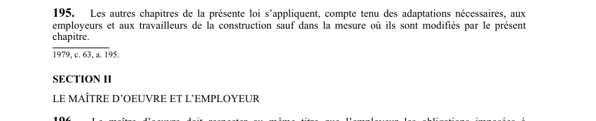

art-195-LSST : application loi travailleurs construction
Un article du wiki ⚖️ Recueil législatif
🌐 LegisQuébec · 📄 PDF officiel (page 56)
Texte officiel : capture du PDF

🔗 Ouvrir a cette page : LSST.pdf : page 56 · texte a jour au 26 mars 2024
En bref
Les autres chapitres de la présente loi s'appliquent aux employeurs et aux travailleurs de la construction, compte tenu des adaptations nécessaires. Il s'agit d'une obligation.
- Sauf dans la mesure où ils sont modifiés par le présent chapitre.
Voir aussi
- art. 193 : contestation devant Tribunal administratif · faculté : une personne qui se croit lésée par une décision de la Commission peut, dans les 10 jours de sa notification, la contester devant le Tribunal administratif du travail ; le recours est instruit et décidé d'urgence.
- art. 194 : définitions chantier construction · cet article définit pour le chapitre les termes « association représentative », « coordonnateur en santé et en sécurité », « employeur », « représentant en santé et en sécurité » et « travailleur de la construction ».
- art. 196 : obligations maître oeuvre construction · obligation : le maître d'oeuvre doit respecter, au même titre que l'employeur, les obligations imposées à l'employeur par la présente loi et les règlements, notamment prendre les mesures nécessaires pour protéger la santé et assurer la sécurité et l'intégrité physique.
- art. 197 : avis ouverture fermeture chantier · obligation : au début et à la fin des activités sur un chantier de construction, le maître d'oeuvre doit transmettre à la Commission un avis d'ouverture ou de fermeture du chantier dans les délais et selon les modalités prévus par règlement.
- ↑ Loi : LSST
Pages qui pointent ici (4)
- art-193-LSST, poursuite pénale Recueil législatif
- art-194-LSST, définitions Recueil législatif
- art-196-LSST, réglementation Recueil législatif
- art-197-LSST, réglementation Recueil législatif